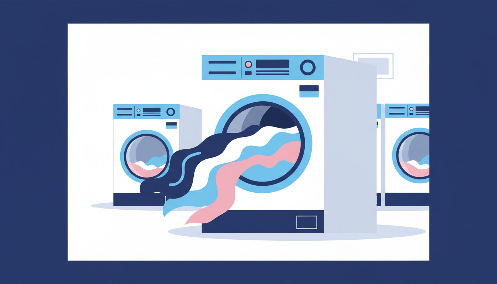

Curtains are one of those household items that quietly collect dust, allergens, cooking odours, and city grime for months without anyone really noticing. Then one day you pull them back and realise they're a completely different shade from when you bought them. The good news? Most curtains are easier to wash than you'd think, and a laundromat is the ideal place to do it.
Why Curtains Need Regular Washing
Curtains act as a giant filter for your home. Dust, pollen, and pollution settle into the fabric every time you open a window. Pet hair clings to them. Cooking smells absorb into them. This build-up affects indoor air quality — particularly noticeable for anyone with allergies or hayfever. Washing curtains once or twice a year makes a remarkable difference to how fresh your living space looks and smells.
Step 1: Check the Care Label
Most cotton, polyester, and poly-cotton blend curtains are machine washable. Linen usually handles machine washing at a cooler temperature. Silk, velvet, and some lined or interlined drapes often require dry cleaning — if the label says dry clean only, take that seriously. Machine washing delicate fabrics can cause irreversible shrinkage or damage to the lining. No care label? Err on the side of caution with a cold gentle cycle.
Step 2: Remove Hooks and Hardware
Take out all curtain hooks, rings, pins, and hardware before washing. These can snag fabric during the cycle, causing tears. Check that any sewn-in hem weights are secure. Give the curtains a good shake outside to dislodge loose dust before loading.
Step 3: Choose the Right Machine Size
This is where a laundromat shines. A single pair of floor-length curtains can weigh 3 to 5 kilograms — too bulky for a standard 7KG home machine. For a standard pair, an 18KG washer gives plenty of room. For multiple pairs or heavy lined drapes, step up to a 27KG machine. The extra space means thorough, even cleaning.
Step 4: Select the Right Cycle and Temperature
Choose a gentle cycle with cold or warm water (30 to 40 degrees). Hot water can cause shrinkage, particularly with cotton and linen. Use a mild liquid detergent rather than powder, which can leave residue in the folds of large fabric items.
Step 5: Drying Your Curtains
The safest approach is a low heat tumble dry for a short time — just enough to relax the fabric and remove most of the moisture — then rehang while still slightly damp. The weight of the fabric naturally pulls out wrinkles as they finish drying on the rod, saving you from ironing metres of material. Avoid high heat, which can shrink curtains, set creases, or damage heat-sensitive fabrics like polyester. For very delicate curtains, skip the dryer entirely and rehang them damp straight from the washer.
Different Curtain Types: Quick Reference
Blockout curtains: Wash cold on gentle, low tumble dry or rehang damp. High heat can damage the blockout coating.
Sheer curtains: Wash inside a mesh bag on cold delicate. Rehang damp — do not tumble dry.
Thermal curtains: Check the care label carefully. If machine washable, use cold gentle and air dry.
Cotton or linen drapes: Cold or warm gentle cycle. Rehang slightly damp to minimise ironing.
Why a Laundromat Is Ideal for Curtains
Home washers simply can't accommodate large or heavy curtains without compromising wash quality. Commercial machines have the drum space, water volume, and spin power to do the job properly. The high-speed spin cycle extracts far more water, meaning faster drying whether you use a dryer or rehang at home.
At Laundry Day, our machines range from 14KG up to 27KG, so you can match the size to your curtains. Detergent is included with every wash, and we never charge card fees. Our locations in Brunswick East, St Albans, and Maribyrnong all have the big machines you need for curtains, drapes, and heavy window treatments.
Give your curtains a wash and you'll be amazed at the difference — brighter colours, fresher air, and a room that feels noticeably cleaner.
Big Curtains? Big Machines.
Laundry Day's commercial washers handle curtains, drapes, and bulky window treatments with ease. Free detergent, zero card fees.
Find Your Nearest Location